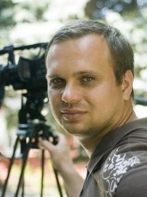

Motion Design Showcase
Animation · Editing · Visual storytelling
I’m Ivan Romanenko — a Motion Designer, Video Editor and AI Creative crafting social ads, brand stories and animation.

Motion design, branded content, advertising and visual storytelling.
Animation · Editing · Visual storytelling
After Effects · Art direction · Sound
Short-form · Reels · Social advertising
Editing · Compositing · Narrative
2D animation · Motion graphics · Production
I create motion and video from concept to delivery: ideas, editing, animation, compositing, sound and platform-ready exports.
My background in cinematography and performance marketing helps me balance strong storytelling with clear business goals.
Directing, cinematography, editing and production — from the first idea to final delivery.
Motion graphics, social ads, branded video and platform-ready creative variations.
Planning shoots, selecting camera, sound and lighting equipment, and training production teams.
Remote production studio, Dubai — branded Reels, social video and campaign content.
Target Studio — performance creatives for Facebook, Instagram and Google.
Multivarka TV — educational animation and visual content production.
Nova Production Studio — filming and editing television features and commercial content.
Dnipropetrovsk Regional Television — studio programmes, reports, talk shows and outside broadcasts.
Kyiv National University of Theatre, Cinema and Television — cinematography and directing.